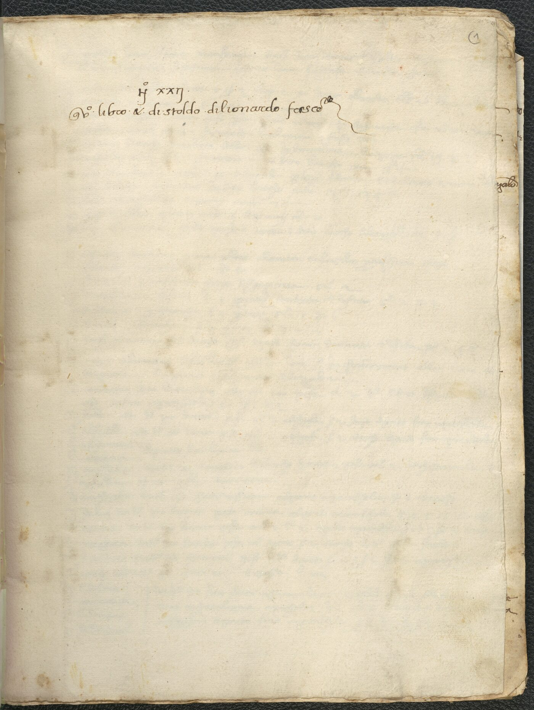

“Questo libro X di Stoldo di Lionardo Frescobaldi.” So opens the first leaf of a vellum-bound volume kept by the Frescobaldi, one of Florence's great merchant-banking families. Compiled roughly between 1417 and 1429, it is not an account ledger but a reference book — the distilled know-how a trader needed at his fingertips.
Its 31-odd leaves move through the qualities and weights of spices and wool; the customs duties charged port by port; grades and prices of cloth, dye and silk; the fineness of gold and silver coin; metrology and exchange (cambio) for Genoa and Florence; a regional survey of Italy; the calendar of European fairs and the maturity periods of bills of exchange; a copied Pisan customs statute; and memoranda on manning and provisioning a galley.
Binding it all together is the ragguaglio — the exact conversion of a weight, a measure or a coin in one marketplace into its equivalent in another. Page after page the numbers pivot on Barcelona, with Avignon, Montpellier, Pisa, Genoa, Venice, Bruges, Alexandria and Damascus arrayed around it. The notebook is, in miniature, a working model of the late-medieval Mediterranean economy.

f. 1r — the ownership inscription of Stoldo di Lionardo Frescobaldi.
The hand is 15th-century Florentine mercantesca — a dense, abraded, heavily abbreviated commercial cursive. Full-page scans downsample too far to read it, so each leaf was cut into native-resolution horizontal bands and read closely, band by band.
[?] and illegible passages […]. It should be checked against the originals by a
trained palaeographer before being treated as authoritative.
| Mark | Meaning |
|---|---|
(word) | Expansion of an abbreviation — e.g. p(er), s(oldi), d(enari). |
[word] | Editorial reconstruction of letters lost to damage, trimming or ink-loss. |
[?] | The preceding reading is uncertain. |
[…] | Illegible passage (length roughly proportional to the dots). |
[blank] | Intentionally blank space or unwritten line. |
⟨ ⟩ | Interlinear or marginal addition, placed at its approximate position. |
※ | The looping entry-initial the scribe uses to open most entries. |
Spelling is preserved exactly — ony = ogni, Barzalona = Barcelona,
Fiorenza = Florence — with expansions and notes confined to the marked brackets. Weights and money are given as written:
lb (libbre), on/once (ounces), s. (soldi), d. (denari), fl./f. (fiorini), gr. (grani/grossi).
Notizie diverse raccolte nell'esercizio della mercatura circa i generi, pesi, misure, valore e Ragguagli da una Piazza all'altra, Stoldo di Leonardo Frescobaldi, 1417–1429.
Harvard Library · 1 volume (31 + 1 leaves), 30 cm · written in mercantesca script · HOLLIS 990150284390203941 · barcode 32044103438974.
Manuscript images © Harvard Library, presented here for study under a self-hosted IIIF image service (manifest ↗).
A fully static site: deep zoom via OpenSeadragon over self-hosted IIIF Level-0 tiles; the page-turn facsimile via StPageFlip; the map via Leaflet; transcription, translation and normalized data carried in JSON. No server required.
Transcription, translation, data normalisation and the edition itself were produced with Claude (Opus 4.8) and should be read as a best-effort scholarly aid.